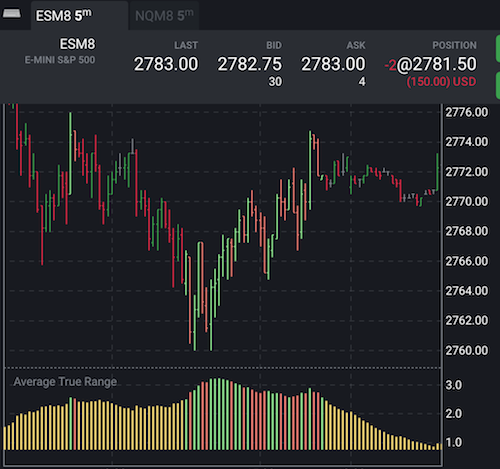

Signaling Average True Range
Fancy-looking EMA is not enough for successful trading. We need a fancy-looking Average True Range indicator too.
First, we just copy the built-in ATR indicator with some renaming:
const predef = require("./tools/predef");
const meta = require("./tools/meta");
const MMA = require("./tools/MMA");
const trueRange = require("./tools/trueRange");
class averageTrueRange {
init() {
this.movingAverage = MMA(this.props.period);
}
map(d, i, history) {
return this.movingAverage(trueRange(d, history.prior()));
}
}
module.exports = {
name: "exampleATR",
description: "Average True Range",
calculator: averageTrueRange,
params: {
period: predef.paramSpecs.period(14)
},
inputType: meta.InputType.BARS,
areaChoice: meta.AreaChoice.NEW,
tags: ["My Indicators"],
schemeStyles: predef.styles.solidLine("#ffe270")
};
The source code is similar to our previous indicators with some additions in the module's export: Indicator.inputType restricts user's choice with OHLC bars here, and Indicator.areaChoice will highlight 'New Area' choice by default when you will place an indicator to the chart. Bars as an input are required to calculate True Range that needs High, Low and Close: all of them will be available in map function via d.high(), d.low() and d.close()
Our goal is to improve the indicator and highlight places where it is larger than some parameterized threshold. Moreover, the threshold parameter will be in tick sizes to make the indicator a product-neutral.
We will highlight the ATR line as well as corresponding candlesticks. For simplicity, highlighting will be with eye-catching tones of red/green colors.
If we need just change the style of dots and columns, we don't need to implement a custom plotter: all we need to do is to compose the style field in the returned object from the map function. Candlestick style is done a similar way.
const predef = require("./tools/predef");
const meta = require("./tools/meta");
const MMA = require("./tools/MMA");
const trueRange = require("./tools/trueRange");
class averageTrueRange {
init() {
this.movingAverage = MMA(this.props.period);
}
map(d, i, history) {
const atr = this.movingAverage(trueRange(d, history.prior()));
const tickSize = this.contractInfo.tickSize;
const atrInTicks = atr / tickSize;
let overrideStyle;
if (atrInTicks > this.props.threshold) {
overrideStyle = {
color: d.open() > d.close() ? "salmon" : "lightgreen"
};
}
return {
value: atr,
candlestick: overrideStyle,
style: {
value: overrideStyle
}
};
}
}
module.exports = {
name: "exampleATR",
description: "Average True Range",
calculator: averageTrueRange,
params: {
period: predef.paramSpecs.period(14),
threshold: predef.paramSpecs.number(10, 1, 0)
},
inputType: meta.InputType.BARS,
areaChoice: meta.AreaChoice.NEW,
tags: ["My Indicators"],
plotter: predef.plotters.columns("value"),
schemeStyles: predef.styles.solidLine("#ffe270")
};

this.contractInfo above is an object with details about the contract of the chart. The app assigns it to the indicator during construction.
Generated using TypeDoc